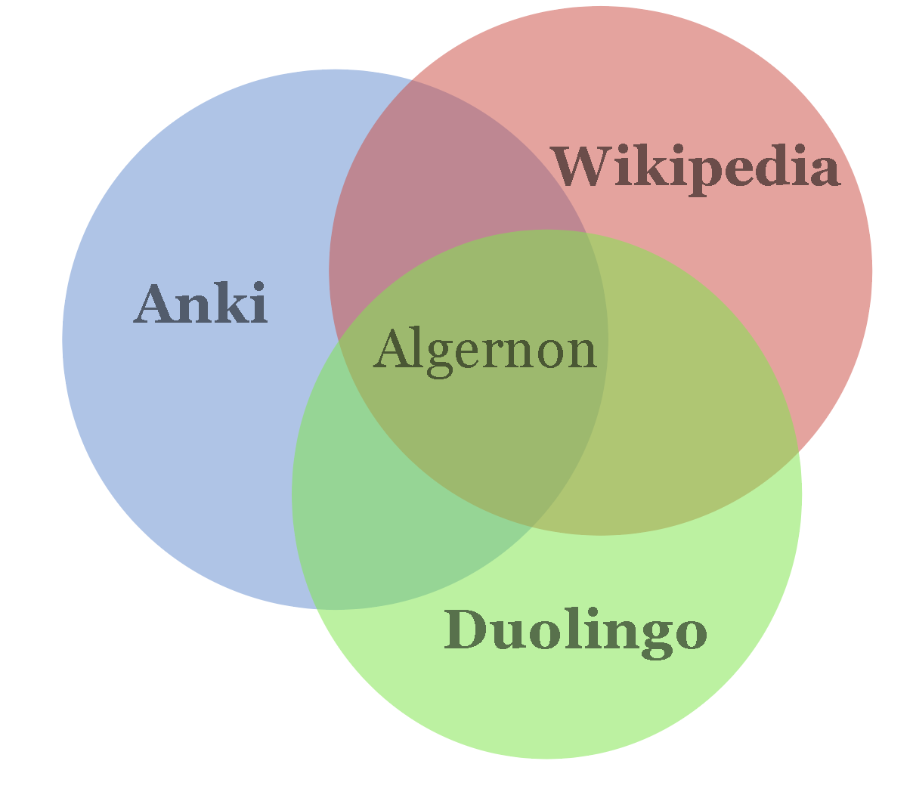

Introducing Algernon

What is it?
Algernon is an open source web-based tool and browser extension for learning and remembering things, with an open community-edited database; a companion you can rely on to help with continuous learning throughout your life and career.
Why (what's the problem?)
The online educational landscape right now consists of a bunch of walled gardens, disconnected learning resources and various flashcard tools. Algernon will instead sit somewhere between open source flashcard tools like Anki, walled gardens such as Coursera, Duolingo and Memrise, and Wikipedia.
The downsides of Walled Gardens
The upside of walled gardens is the curated content and systems specialized for a specific domain. But downsides are big:
- Your data is not portable: you cannot take your data with you, so there is no way to integrate what you have learned through various services
- The expectation that the service is the be all end all of its particular domain. When the service is out of content, there is usually no way for you to add your own or continue your study.
- If the service would go down or change significantly, there is nothing you can do about it. This is a problem if you're learning for the long term, i.e. 10+ years.
The downsides of Flashcard apps
There are many apps and services for studying and making flashcards. Some are offline apps such as Anki, Mnemosyne, SuperMemo, but there are also many web-based such as Quizlet.
The first downside of these tools is the fact that they're based on the concept of flashcards and decks, which I think is inherently limiting. While I personally use Anki and I like it very much, the fact that there are no connections between cards is a daily annoyance to me, especially for language learning. The problem happens when you have related cards, such as a sentence card along with cards for each word in the sentence. How well you remember one depends to some degree on the other.
The second downside which is related to the first one, is that there is no source of truth in all the unstructured data of flashcards and decks. In Anki, I can download shared decks made by other people, but there is no way to remove duplicate cards unless they are exactly identical. And the fact that everyone makes their own underlying note structure that generates the cards means there is no standard way to refer to a piece of knowledge.
Other resources
On the other end, there are a ton of free (and paid) resources for learning stuff on the web, things like blogs, podcasts, wikis, open data sets and Youtube videos just to mention a few. If you want to study these in an effective way, you have to do a lot of manual work to get them into your SRS app, or set up your own manual system of study. Here, I want to index this content just like a search engine indexes the web. Some data sets may need to be processed and indexed manually, but for most cases the browser extension will facilitate with the importing of content from any web-site.
How: on a high level
The two main parts of Algernon are the Knowledge Base and the Memory Model.
Knowledge Base
The knowledge base represents the single source of truth, a carefully structured database for various hand-picked domains from which exercises are generated.
The knowledge base consists of
- Sources with permissive licenses, such as open data-sets and Creative Commons content.
- Links to indexed web resources covered by copyrights. Just like a search engine that indexes based on keywords, Algernon indexes based on concepts tied to the knowledge base.
- If all goes well: Additions and corrections made by the community of users, similar to Wikipedia.
Memory Model
Using the knowledge base and user responses to its exercises, we can build an integrated memory model that takes into account the interactions between items in the knowledge base.
Using the model, we make the knowledge base searchable based on difficulty, providing tailored recommendations for each individual user. Eventually, we can see what kind of exercise would be most beneficial at a certain point in time. For example, if I'm having trouble remembering a specific word, it might make sense to add more "higher-level" exercises containing that word (such as podcasts or reading exercises) rather than trying to cram the word into memory without the proper context.
How: on a technical level
First milestone
The initial release will be focused on Chinese. It will use a Python Django server with PostgresSQL Database, where the knowledge base and user data is stored. The web app provides basic exploration of indexed content relevant to the user's level. User word data can be imported from Anki directly in order to cross-reference with the knowledge base. The main interface though will be the browser extension, which indexes the content on visited web pages, and allows the user to see translations and pinyin, and to import words and sentences from them. Once imported, the user can generate notes and cards and sync them back to Anki, or some other format.
Later releases
Will flesh out the web app primarily with its own Spaced Repetition System and recommendation engine, which takes advantage of the explicit structure of the knowledge base to generate innovative exercise variations that are interconnected in the memory model.
Openness and freedom
I wish for this to be a tool you can depend on for a long time, which is why I think it's important that it's open source. Hosting will be provided for free to the extent that I can personally pay for it, or the hosting is covered by donations. The user should always have the option of hosting it themselves or with a third party, if the service was to go down for some reason.
The openness goes for the data as well, not only the knowledge base (as far as it's legally possible to share w.r.t licensing), but also the user's personal memory model which should be easy to export.
Comments
Comments powered by Disqus